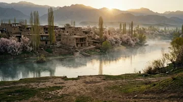
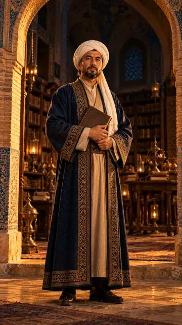

Ibn Sino qir tepasida ✅ tayyor
9:16 (tik)📎 Veo'ga shu 2 ta rasmni biriktiring


🖼 Rasm prompti (Veo)
Attach the landscape image and the Ibn Sina reference image. Ibn Sina stands on the grassy top of a high hill above the valley, seen waist-up from a slightly low camera angle, placed in the lower third of the vertical frame, holding his book, looking straight into the camera with a calm kind look. Below and behind him the valley opens wide: the river winding through it, the village and orchards far down, the mountains and the golden sunrise at the top of the frame, soft morning haze between the layers. Keep his face exactly as in the reference image, the same person: dark black beard, white turban, dark blue robe with gold border. Use the landscape image as the place: the same river with morning mist, the old clay paxsa village, the blooming apricot orchards, the poplars, the mountains and the rising sun, but seen from high above, from the top of a hill, so the whole valley spreads wide and deep behind him. Cinematic photorealistic film still, vertical 9:16 format, warm golden light, deep soft shadows, gentle film grain, no text, no letters, no watermark.